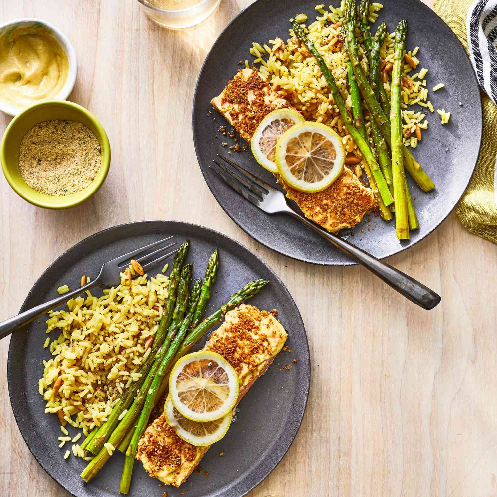

Baked Salmon Fillets

Ingredients
- 4oz fillets salmon
- 3 tablespoons prepared dijon mustard
- salt and ground black pepper to taste
- 1/4 cup italian-style dry bread crumbs
- 1/4 cup butter, melted
Directions
-
Gather all ingredients. Preheat the oven to 400 degrees. Line a shallow
baking pan with aluminium foil.
-
Place salmon fillets skin-side down to prepared baking pan. Spread a
thin layer of msutard on top of each fillet: season with salt and pepper
- Top with bread crumbs, then drizzle with melted butter.
-
Bake in the preheated oven until salmon flakes easily with a fork, about
15 minutes.
- Serve and enjoy!
Home